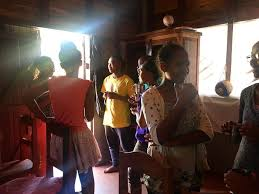

Two years after getting the baccalaureat degree, I got a call from ONJA NGO. It was surprising to me because I did not even know anything about it. It is an organisation which helps the students who don't have the opportunity to continue studying anymore after BEPC or BACC.I attended the first exam in my town, then I passed.A few months later, we went to Mahanoro to take part in the 2-week formation. There was an exam again and I took it.
06th January 2019, I came here as a student again. The organisation's goal is to give us good education with english and coding. Up to now,we have been studying english for a year. We have to master these four skills:
Since January 2020, we have been introduced coding and we are on the way of studying it now. We (20 students) have a huge pontential goal which is to be good web developers.
We have a chat among ourselves during 15 mn
I am happy to be here and I really enjoy studying at ONJA because we are well-treated here.
These are the students who study at ONJA.;